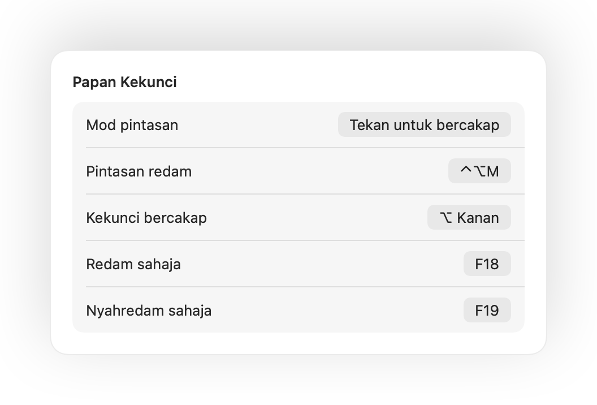
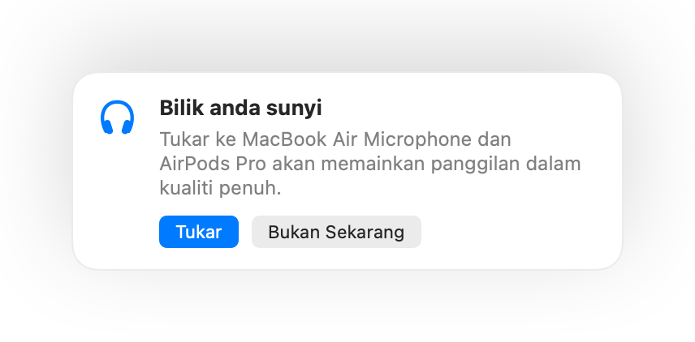

Tekan AirPods anda untuk meredam
Semasa sebarang panggilan, tekan tangkai sekali untuk meredam dan sekali lagi untuk nyahredam. Ia juga berfungsi dalam Chrome, di mana Google Meet dan panggilan web lain mengabaikan tekanan AirPods.
Muffle untuk Mac
Tekan AirPods anda atau gunakan satu pintasan papan kekunci. Muffle mematikan mikrofon itu sendiri, jadi Google Meet, Zoom, Teams, Slack dan semua aplikasi lain hanya mendengar kesenyapan.
Percuma selama 3 hari. Kemudian bayar sekali, tiada langganan. Untuk macOS 14 Sonoma dan lebih baharu.
Klik butang, tekan AirPods anda atau gunakan pintasan. Muffle mematikan mikrofon itu sendiri, jadi setiap aplikasi mendengar kesenyapan.
Redam, pilih mik anda, kunci tahapnya serta hidupkan dan matikan ciri, terus dari bar menu.

Kebanyakan butang redam hanya meredam satu aplikasi. Muffle mematikan mikrofon itu sendiri, jadi setiap aplikasi pada Mac anda hanya mendengar kesunyian.
Semasa sebarang panggilan, tekan tangkai sekali untuk meredam dan sekali lagi untuk nyahredam. Ia juga berfungsi dalam Chrome, di mana Google Meet dan panggilan web lain mengabaikan tekanan AirPods.
Mula bercakap semasa diredam dan Muffle akan memberitahu anda, sebelum anda menerangkan seluruh idea anda tanpa didengari sesiapa.

Control-Option-M meredam anda di mana-mana, walaupun panggilan berada dalam tab latar belakang. Tahan untuk bercakap semasa diredam, lepaskan untuk meredam semula.
Butang terapung kecil menunjukkan status mik anda semasa panggilan. Klik untuk meredam atau nyahredam.

Pilih cara pintasan anda berfungsi: ketik untuk menogol, tahan untuk bercakap atau tahan untuk meredam ketika batuk. Tambah kekunci redam dan nyahredam berasingan, atau tahan satu kekunci seperti ⌥ Kanan atau butang tetikus tambahan.

Nyahredam untuk bercakap seketika? Jika anda kemudian kekal senyap mengikut tempoh masa yang anda pilih, Muffle meredam anda semula. Hanya suara anda diambil kira, bukan menaip atau hingar latar belakang.
Dengan AirPods di dalam bilik yang sunyi, Muffle mencadangkan mik Mac anda supaya AirPods memainkan panggilan dalam kualiti penuh. Apabila keadaan menjadi bising, ia mencadangkan mik AirPods.

Chrome, Zoom dan Teams menukar tahap mik anda secara automatik. Kuncikannya dan Muffle akan mengembalikannya.
Mulakan setiap panggilan dalam keadaan diredam, aktifkan semula mik apabila panggilan tamat, dan redam setiap kali anda mengunci Mac anda.

Jika fon kepala anda terputus sambungan semasa panggilan, Muffle akan meredam sebelum panggilan bertukar kepada mik Mac anda dan menyiarkan seluruh bilik.
Redam daripada app Pintasan, Siri, Stream Deck, Raycast, atau butang dalam Pusat Kawalan.
Sinar hijau atau merah di sekeliling skrin, ikon bar menu berwarna, butang terapung dan bunyi yang boleh anda matikan bagi setiap mik. Hidupkan pilihan yang anda suka.
Muffle tidak pernah merakam, menyimpan atau menghantar audio. Ia hanya menghidupkan dan mematikan mikrofon anda serta membaca kelantangannya. Tiada akaun, tiada analitik, tiada penjejakan.
Pasang Muffle daripada Mac App Store dan benarkan akses mikrofon.
Sertai panggilan dalam mana-mana aplikasi, seperti biasa.
Tekan AirPods anda, tekan Control-Option-M, atau klik ikon bar menu untuk meredam.
Ya. Chrome tidak menghantar tekanan redam AirPods kepada panggilan web, jadi Muffle menerimanya dan meredam mikrofon itu sendiri. Hal yang sama berlaku untuk sebarang panggilan dalam tab pelayar.
Aplikasi panggilan anda mungkin masih menunjukkan mik anda aktif, kerana Muffle mematikan mikrofon perkakasan dan bukannya butang aplikasi. Orang lain tetap mendengar kesenyapan. Ikon Muffle di bar menu bertukar menjadi merah semasa anda diredam.
AirPods Pro, AirPods 3 dan lebih baharu, serta AirPods Max, bersama model Beats yang menyokong kawalan panggilan. Pintasan papan kekunci dan bar menu berfungsi dengan mana-mana mikrofon.
Ya. Muffle berfungsi dengan setiap aplikasi pada Mac anda yang menggunakan mikrofon, sama ada aplikasi desktop mahupun panggilan pelayar.
Tidak. Cuba semua ciri secara percuma selama 3 hari, kemudian buka kunci Muffle dengan sekali pembelian.
macOS hanya menghantar tekanan AirPods kepada aplikasi yang boleh menggunakan mikrofon, jadi Muffle mengekalkan sambungan senyap terbuka semasa panggilan. Tiada apa yang dirakam.
Muffle mengaktifkan semula mikrofon anda apabila ia ditutup, jadi anda tidak akan terperangkap dalam keadaan senyap.
macOS 14 Sonoma dan lebih baharu. Butang Pusat Kawalan memerlukan macOS 26 atau lebih baharu.
Ya. Pilih “Tekan untuk bercakap” dalam Tetapan dan tahan pintasan anda untuk bercakap. Anda juga boleh menahan satu kekunci seperti ⌥ Kanan atau fn, atau butang tetikus tambahan.
Apabila panggilan menggunakan mik AirPods, AirPods bertukar ke mod panggilan yang memainkan bunyi dalam kualiti lebih rendah. Di dalam bilik yang sunyi, Muffle sebaliknya mencadangkan mik Mac anda supaya AirPods terus bermain dalam kualiti penuh.
Tidak. Muffle mengecam pertuturan dengan analisis bunyi pada peranti Apple, jadi hanya percakapan diambil kira. Menaip, klik dan hingar latar belakang tidak diambil kira, serta tiada apa yang dirakam.
Jawapan ringkas dan praktikal untuk meredam mikrofon anda pada Mac, dalam setiap aplikasi.
Muffle percuma untuk dicuba selama 3 hari.